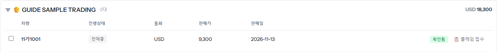
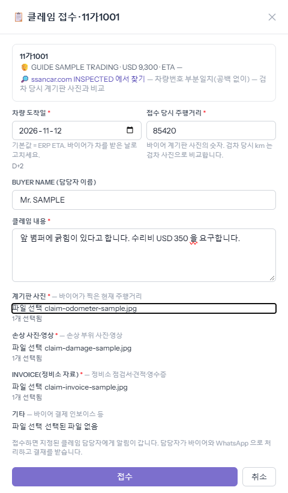
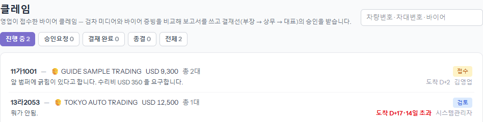
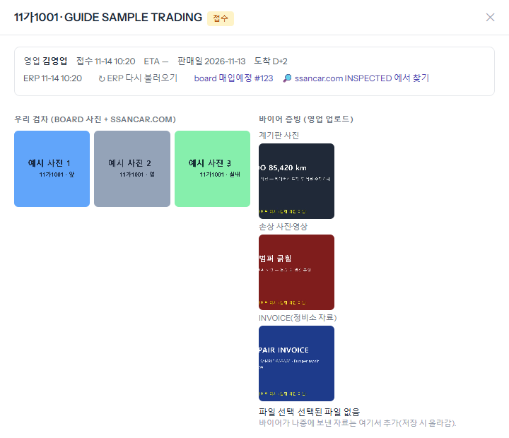
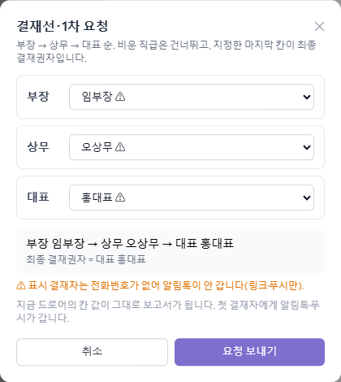
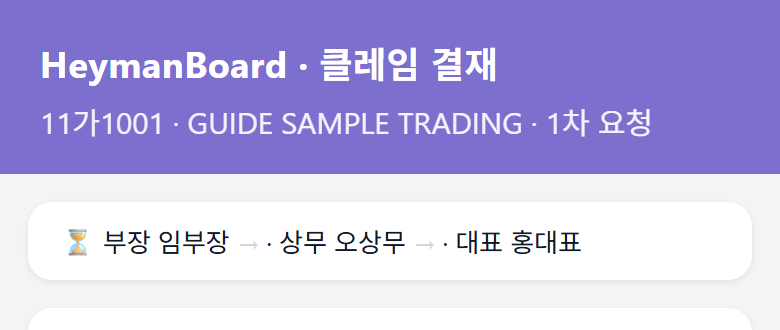
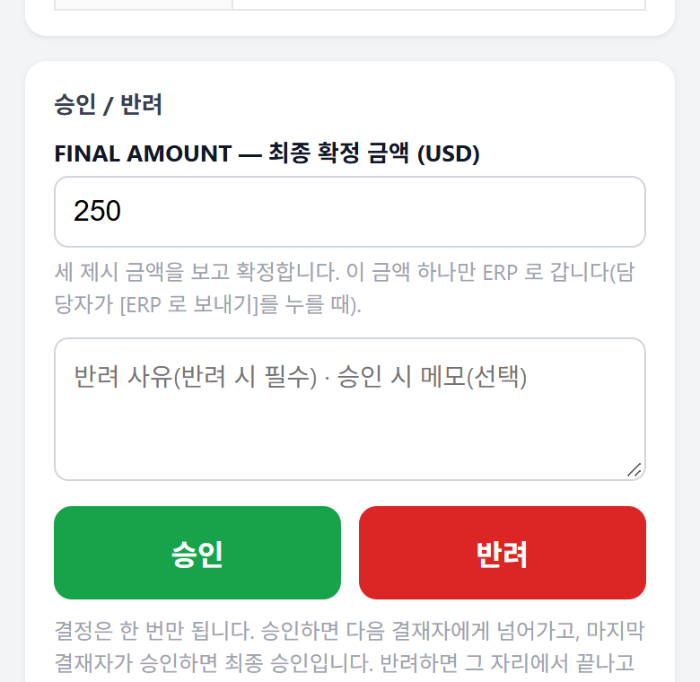
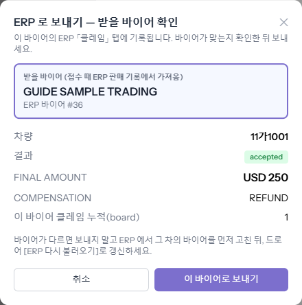
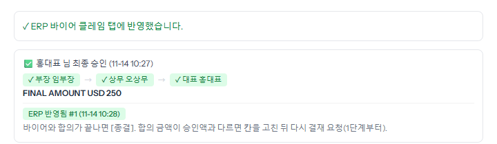

바이어가 받은 차에 문제가 있다고 하면, 영업이 board 에 접수하고 → 클레임 담당자가 보고서를 써서 → 부장·상무·대표 결재를 받은 뒤 → 승인된 금액을 ERP 바이어 「클레임」 탭에 남깁니다. 결재자는 board 에 들어오지 않고 알림톡 링크로 휴대폰에서 결재합니다.
「내 정산·미수(포털)」 → [판매내역]에서 바이어를 펼치거나 차량번호로 찾으면, 차 줄 끝에 [📋 클레임 접수]가 있습니다. 이미 접수된 차는 버튼 대신 상태 칩이 보입니다.

[접수]를 누르면 지정된 클레임 담당자에게 알림이 갑니다. 그다음 바이어와 얘기하고 결재를 받는 것은 담당자가 합니다.

진행 중·승인요청·결재 완료·종결 탭으로 나뉩니다. 줄 오른쪽에 상태와 「도착 D+N」이 보이고, 도착 뒤 14일이 넘으면 빨갛게 「14일 초과」가 붙습니다(그때는 「기한 초과 처리 사유」를 적어야 결재 요청이 됩니다).

왼쪽은 우리 검차 사진(board + ssancar.com), 오른쪽은 영업이 올린 바이어 증빙입니다. 아래 보고서 칸은 CLAIM REPORT 양식 순서이고, 바이어 신용도·클레임 횟수·구매 기록은 ERP 에서 자동으로 채워집니다.
다 쓰면 맨 아래 [저장]. 바이어가 나중에 보낸 자료는 「바이어 증빙」 아래에서 더 올립니다.

부장 → 상무 → 대표 순서입니다. 칸마다 사람을 고르고, 비운 직급은 건너뜁니다. 고른 마지막 사람이 최종 결재권자입니다. 첫 결재자에게 알림톡과 휴대폰 알림이 갑니다. 「⚠」가 붙은 사람은 전화번호가 없어 알림톡이 안 갑니다(사용자 관리에서 번호를 넣어야 합니다).

맨 위에 결재 순서와 지금 누구 차례인지(⏳) 보이고, 아래로 검차 사진·바이어 증빙·CLAIM REPORT 가 이어집니다. 로그인은 필요 없고, 링크는 5일 동안 열립니다.

승인하면 다음 결재자에게 넘어갑니다. 마지막 결재자 화면에는 「FINAL AMOUNT — 최종 확정 금액」 칸이 있어, 세 제시 금액을 보고 하나로 정합니다. 이 금액 하나만 ERP 로 갑니다. 반려는 사유가 꼭 있어야 하고, 그 자리에서 끝나 담당자·영업에게 알림이 갑니다. 결정은 한 번만 됩니다.

건 맨 위에 「최종 승인」과 확정 금액이 뜨고 [ERP 로 보내기]가 생깁니다. 누르면 받을 바이어(접수 때 ERP 판매 기록에서 가져온 바이어)와 금액을 한 번 더 보여 줍니다. 바이어가 맞으면 [이 바이어로 보내기]. 다르면 보내지 말고 ERP 에서 그 차의 바이어를 먼저 고친 뒤 [ERP 다시 불러오기]를 누릅니다.

